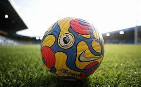
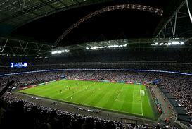
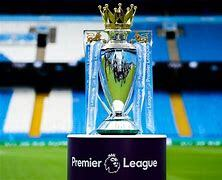

The Premier League is the highest level of the English football league system. Contested by 20 clubs,
it operates on a system of promotion and relegation with the English Football League (EFL). Seasons usually run
from August to May, with each team playing 38 matches: two against each other, one home and one away.
Most games are played on Saturday and Sunday afternoons, with occasional weekday evening fixtures.
The competition was founded as the FA Premier League on 20 February 1992, following the decision of
First Division (the top-tier league from 1888 until 1992) clubs to break away from the English Football League.
However, teams may still be relegated to and promoted from the EFL Championship. The Premier League takes
advantage of a £5 billion television rights deal, with Sky and BT Group securing the domestic rights to
broadcast 128 and 32 games, respectively. This deal will rise to £6.7 billion for the four seasons
from The league is projected to earn $7.2 billion in overseas TV right.
The Premier League is a corporation managed by a chief executive, with member clubs acting as
shareholders. Clubs were apportioned central payment revenues of £2.4 billion in 2016–17,
with a further £343 million in solidarity payments to EFL clubs.

Stadiums
As of the 2023–24 season, Premier League football has been played in 61 stadiums since the formation of
the division. The Hillsborough disaster in 1989 and the subsequent Taylor Report saw a recommendation
that standing terraces should be abolished. As a result, all stadiums in the Premier League are all-seater.
Stadium attendances are a significant source of regular income for Premier League clubs. For the 2022–23
season, average attendances across the league clubs were 40,235 for Premier League matches with an
aggregate attendance of 15,289,340. This represents an increase of 19,109 from the average attendance
of 21,126 recorded in the Premier League's first season (1992–93). However, during the 1992–93 season,
the capacities of most stadiums were reduced as clubs replaced terraces with seats in order to meet the
Taylor Report's 1994–95 deadline for all-seater stadiums. The 2022–23 season also set a
competition record for total attendance with more than 15 million spectators, with average attendance
also reaching record levels, surpassing the previous record of 39,989 set in the 2021–22 season, which
in turn broke over 70 years old record set in 1948–49 season.

As well as sponsorship for the league itself, the Premier League has a number of official partners and
suppliers. The official ball supplier for the league is Nike who have had the contract since the
2000–01 season when they took over from Mitre. Under its Merlin brand, Topps held the licence to
produce collectables for the Premier League between 1994 and 2019 including stickers (for their sticker
album) and trading cards. Launched in the 2007–08 season, Topps' Match Attax, the official Premier
League trading card game, is the best selling boys collectable in the UK, and is also the biggest selling
sports trading card game in the world. In October 2018, Panini were awarded the licence to
produce collectables from the 2019–20 season. The chocolate company Cadbury has been the official
snack partner of the Premier League since 2017, and sponsored the Golden Boot, Golden Glove and
Playmaker of the Season awards from the 2017–18 season to 2019–20 season. The Coca-Cola Company
(under its Coca-Cola Zero Sugar product line) sponsored these awards during the 2020–21 season
with Castrol being the current sponsor as of the 2021–22 season.
See more about the
Trophy
The Premier League maintains two trophies – the genuine trophy (held by the reigning champions)
and a spare replica. Two trophies are held for the purpose of making the award within minutes of
the title being secured, in the event that on the final day of the season two clubs are still
within reach of winning the League. In the rare event that more than two clubs are vying for
the title on the final day of the season, a replica won by a previous club is used.
The current Premier League trophy was created by Royal Jewellers Garrard & Co/Asprey of London and was
designed in house at Garrard & Co by Trevor Brown and Paul Marsden. It consists of a trophy with a golden
crown and a malachite plinth base. The plinth weighs 33 pounds (15 kg) and the trophy weighs 22 pounds
(10.0 kg). The trophy and plinth are 76 cm (30 in) tall, 43 cm (17 in) wide and 25 cm (9.8 in)
deep.
Its main body is solid sterling silver and silver gilt, while its plinth is made of malachite,
a semi-precious stone. The plinth has a silver band around its circumference, upon which the names
of the title-winning clubs are listed. The green of the malachite represents the green field of play.
The design of the trophy is based on the heraldry of Three Lions that is associated with English football.
Two of the lions are found above the handles on either side of the trophy – the third is symbolised by the
captain of the title-winning team as he raises the trophy, and its gold crown, above his head at the end
of the season. The ribbons that drape the handles are presented in the team colors of the league
champions that year. In 2004, a special gold version of the trophy was commissioned to commemorate
Arsenal winning the title without a single defeat.
